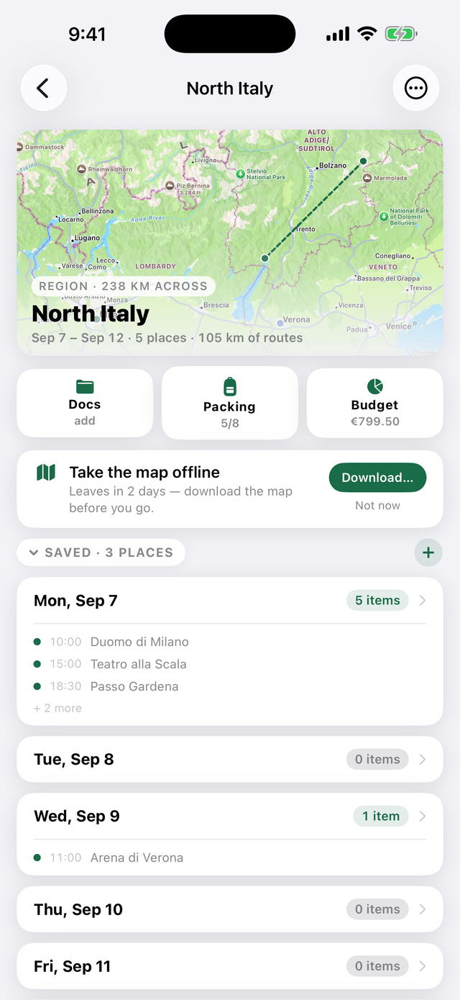
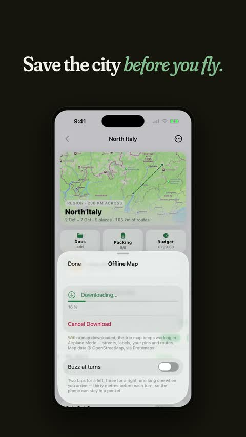
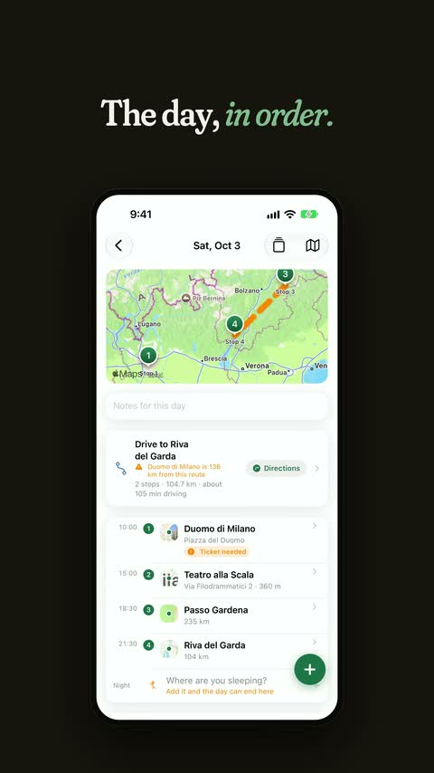
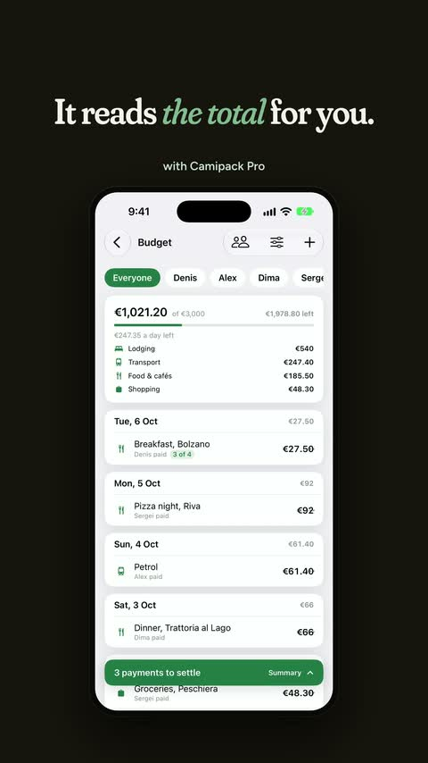
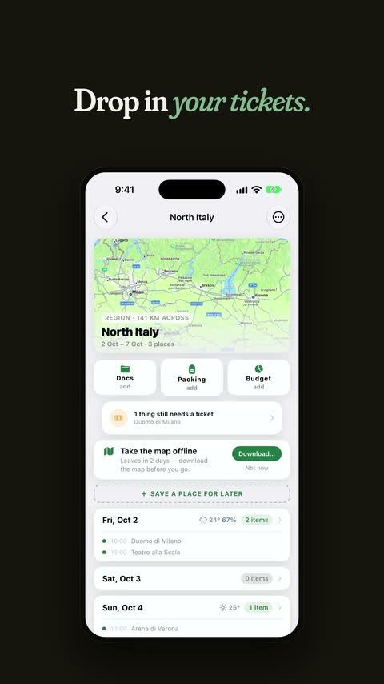
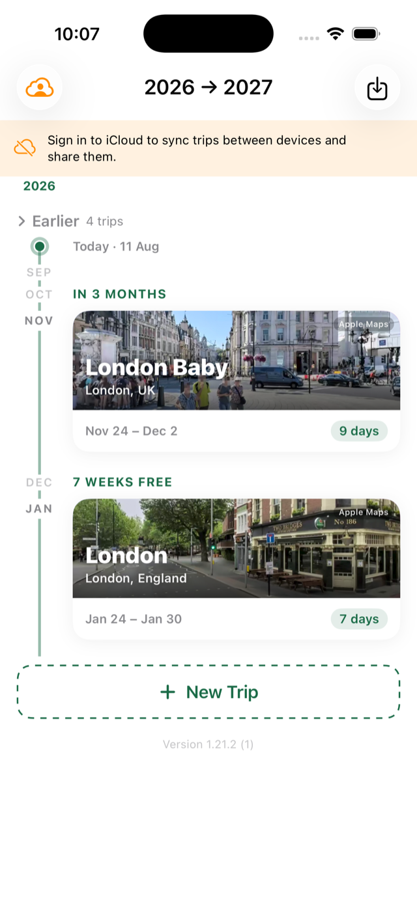
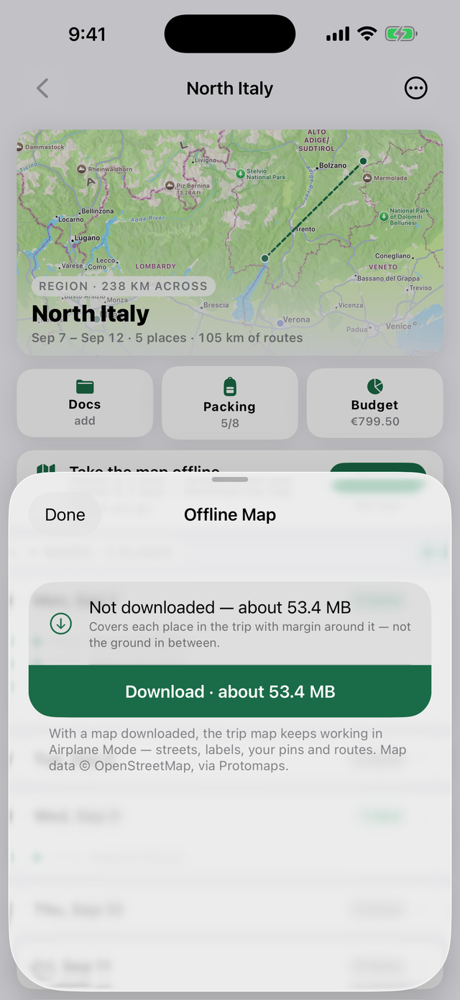
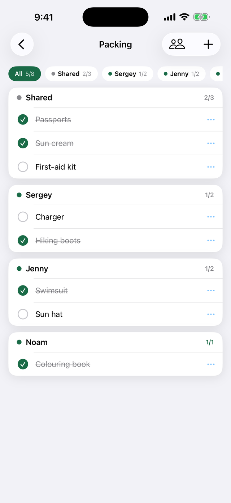
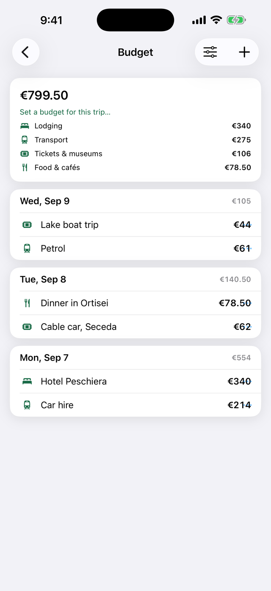

Planification gratuite · Sans compte · Sans pub
Planifiez chaque journée d'un voyage sur une carte vivante — lieux, promenades, billets, bagages, budget et documents dans une seule app iPhone. Tout reste sur vos appareils et dans votre propre iCloud. Rien n'est collecté. Jamais.

Chaque voyage s'ouvre sur une carte qui grandit avec votre programme — épingles teintées par journée, itinéraires à pied tracés rue par rue. Prévu pour une ville, étendu à toute une région ? La carte suit.
Téléchargez la carte d'un voyage une fois (une ville pèse environ 10–40 Mo) et elle fonctionne en mode Avion — rues, libellés, vos épingles et itinéraires. Pas de réseau à l'étranger, aucun problème.
Partagez un voyage avec ceux qui voyagent avec vous et modifiez-le ensemble — les changements se synchronisent en quelques instants via iCloud, avec une pastille indiquant qui a modifié quoi.
Une liste commune et une par voyageur. Cochez les articles et regardez le compteur de bagages grimper.
Hôtel en euros, musée en livres, vols en dollars — chaque dépense garde sa devise et les totaux restent cohérents.
Billets et réservations s'attachent au jour qui leur correspond. Avec Camipack Pro, Camipack les lit à votre place et renseigne horaires et adresses.
Placez tout le voyage dans votre calendrier avec des alertes, et gardez le compte à rebours — ou l'itinéraire du jour — sur votre écran d'accueil.
Exportez n'importe quel voyage en un seul fichier — le plan complet avec les documents. Sauvegardez-le, envoyez-le, réimportez-le où vous voulez.
Une demi-minute chacune, sur un vrai plan de voyage dans l'iPhone. Vidéos en anglais.




0 $
3,99 $ par mois · ou 24,99 $ par an



